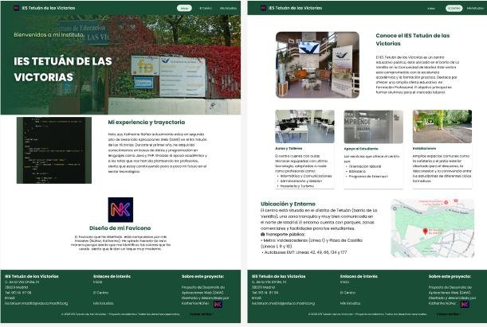
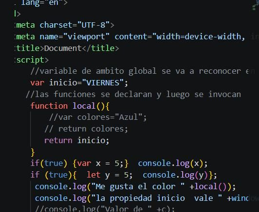

Prototipo Web IES Tetuán
Diseño de interfaz de usuario con Figma, HTML y CSS

Diseño de interfaz de usuario con Figma, HTML y CSS

Desarrollo de servidor con PHP y gestión de bases de datos.
Todo este aprendizaje técnico supone un gran paso en mi evolución profesional hacia el sector del desarrollo de software. He aprendido a resolver problemas, trabajar en equipo, organizar mi tiempo y desarrollar técnicas que me serán muy útiles en mi vida profesional.
Gracias a esta formación estaré preparada para afrontar nuevos retos y seguir creciendo en el mundo laboral.